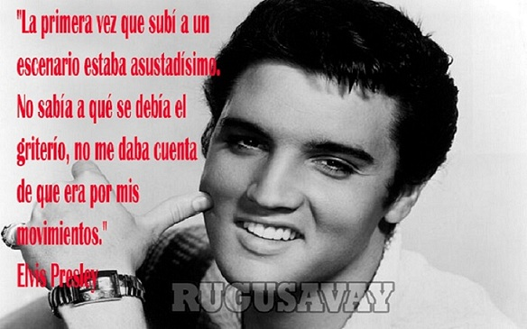

Elvis Aaron Presleynota(Tupelo, Misisipi, 8 de enero de 1935-Memphis, Tennessee, 16 de agosto de 1977) fue un cantante y actor estadounidense considerado de los más populares del siglo XX, considerado como un icono cultural y conocido ampliamente bajo su nombre de pila, Elvis. Se hace referencia a él frecuentemente como «el Rey».
Nació en Tupelo, Mississipi, pero cuando tenía 13 años se mudó junto a su familia a Memphis, Tennessee donde, en 1954, comenzó su carrera artística cuando Sam Phillips, el dueño de Sun Records, vio en él la manera de expandir la música afroamericana. Acompañado por el guitarrista Scotty Moore y el contrabajista Bill Black, fue uno de los creadores del rockabilly, un estilo de tempo rápido impulsado por un constante ritmo que consiste en una fusión de música country y rhythm and blues.
Tras llegar a un acuerdo con el que fue su apoderado durante casi dos décadas, el coronel Tom Parker, la compañía discográfica RCA Records consiguió un contrato para difundir su música. El primer sencillo con esta empresa, «Heartbreak Hotel», publicado en enero de 1956, se convirtió en un éxito número uno. Pronto, tras sus apariciones en los medios, se convirtió en la figura principal del popular sonido del rock and roll, con una serie de presentaciones televisivas y éxitos que llegaron a la cima de las listas de ventas. Sus interpretaciones llenas de energía, sobre todo de canciones afroamericanas y su estilo desinhibido lo hicieron enormemente popular y controvertido. Meses después, en noviembre de ese mismo año, llevó a cabo su debut cinematográfico con la película Love Me Tender.
Reclutado para el servicio militar en 1958, reanudó su carrera artística dos años más tarde, llegando parte de su material a alcanzar mayor éxito comercial desde entonces. Dio pocos conciertos, sin embargo, en la década de los 60, guiado por Parker, procedió a dedicarse a filmar películas para Hollywood y bandas sonoras. En 1968, tras siete años alejado de los escenarios, volvió a realizar presentaciones en directo en un especial de televisión que dio lugar a una amplia serie de conciertos en Las Vegas y también a varias giras musicales.
En 1973, protagonizó el primer concierto teletransmitido, de ámbito mundial vía satélite, visto aproximadamente por 1500 millones de personas. Finalmente, el consumo excesivo de medicamentos prescritos comprometió gravemente su salud, hasta que en 1977 murió súbitamente a la edad de 42 años, a causa de un infarto agudo de miocardio
Nació en Tupelo, Mississipi, pero cuando tenía 13 años se mudó junto a su familia a Memphis, Tennessee donde, en 1954, comenzó su carrera artística cuando Sam Phillips, el dueño de Sun Records, vio en él la manera de expandir la música afroamericana. Acompañado por el guitarrista Scotty Moore y el contrabajista Bill Black, fue uno de los creadores del rockabilly, un estilo de tempo rápido impulsado por un constante ritmo que consiste en una fusión de música country y rhythm and blues.
Tras llegar a un acuerdo con el que fue su apoderado durante casi dos décadas, el coronel Tom Parker, la compañía discográfica RCA Records consiguió un contrato para difundir su música. El primer sencillo con esta empresa, «Heartbreak Hotel», publicado en enero de 1956, se convirtió en un éxito número uno. Pronto, tras sus apariciones en los medios, se convirtió en la figura principal del popular sonido del rock and roll, con una serie de presentaciones televisivas y éxitos que llegaron a la cima de las listas de ventas. Sus interpretaciones llenas de energía, sobre todo de canciones afroamericanas y su estilo desinhibido lo hicieron enormemente popular y controvertido. Meses después, en noviembre de ese mismo año, llevó a cabo su debut cinematográfico con la película Love Me Tender.
Reclutado para el servicio militar en 1958, reanudó su carrera artística dos años más tarde, llegando parte de su material a alcanzar mayor éxito comercial desde entonces. Dio pocos conciertos, sin embargo, en la década de los 60, guiado por Parker, procedió a dedicarse a filmar películas para Hollywood y bandas sonoras. En 1968, tras siete años alejado de los escenarios, volvió a realizar presentaciones en directo en un especial de televisión que dio lugar a una amplia serie de conciertos en Las Vegas y también a varias giras musicales.
En 1973, protagonizó el primer concierto teletransmitido, de ámbito mundial vía satélite, visto aproximadamente por 1500 millones de personas. Finalmente, el consumo excesivo de medicamentos prescritos comprometió gravemente su salud, hasta que en 1977 murió súbitamente a la edad de 42 años, a causa de un infarto agudo de miocardio
Primeros años de vida

Estilo Musical
Las primeras influencias musicales de Presley procedían de la música góspel. Su madre recordó que a la edad de dos años, en la iglesia de la Asamblea de Dios en Tupelo, a donde regularmente asistía la familia, «él se deslizó fuera de mi regazo, corrió al pasillo y se subió a la plataforma. Ahí se quedó parado mirando hacia el coro e intentando cantar con ellos.» En Memphis, Presley asistía con frecuencia a las noches de gospel en el Auditorio Ellis, donde grupos como The Statesmen Quartet interpretaban su música en un estilo tal que, Guralnick sugiere, sembró las semillas de las futuras presentaciones de Presley.
Como adolescente, Presley tuvo intereses musicales amplios, se interesó profundamente en las expresiones musicales de los afroamericanos así como de los de raza blanca. Aunque nunca tuvo ningún entrenamiento formal, sus conocimientos musicales ya eran considerables cuando hizo sus primeras grabaciones profesionales en 1954, a la edad de 19 años. Cuando Jerry Leiber y Mike Stoller lo conocieron dos años más tarde, se asombraron por su conocimiento enciclopédico del blues. En una conferencia de prensa al año siguiente, con orgullo declaró: «conozco prácticamente cada canción religiosa que se ha escrito».
Legado
Elvis Presley es una figura suprema en la vida estadounidense, cuya presencia, no importa cuán banal o predecible fue, no puede tener ninguna comparación real. ... El rango cultural de su música se ha ampliado hasta el punto donde incluyen no sólo los éxitos del momento, sino también los recitales patrióticos, el gospel y el country puro y el blues realmente sucio. ... Elvis emergió como un gran artista, un gran rockero, un gran proveedor de schlock, un personaje de gran corazón, un gran pelmazo, un gran símbolo de potencia, un gran comicastro, una gran persona agradable y, sí, un gran estadounidense
Discografia
Se han publicado un gran número de grabaciones acreditadas a Elvis Presley, por lo que el número total de sus grabaciones originales asciende a entre 665 y 711, dependiendo de cuales se tomen en cuenta. El cantante comenzó su carrera y tuvo más éxito en una época cuando los sencillos eran el principal medio comercial de la música pop. En el caso de sus álbumes, la distinción entre los álbumes de estudio «oficiales» y otros formatos, a menudo no es clara. Además, la mayor parte de la década de 1960, su carrera se centró en bandas sonoras. Generalmente, en la década de 1970, sus álbumes más promocionados y más vendidos eran grabaciones en vivo. Este resumen discográfico muestra sólo los álbumes que alcanzaron la cima de la lista principal de música pop en Estados Unidos, el Billboard 200, o de la lista oficial de álbumes británicos, UK Albums Chart.
- 1956: Elvis Presley
- 1956: Elvis
- 1957: Loving You
- 1957: Elvis' Christmas Album
- 1960: Elvis Is Back!
- 1960: G.I. Blues
- 1961: Something for Everybody
- 1961: Blue Hawaii
- 1962: Pot Luck
- 1964: Roustabout
- 1969: From Elvis in Memphis
- 1973: Aloha from Hawaii: Via Satellite
- 1974: Elvis: A Legendary Performer Volume
- 1975: Promised Land
- 1976: From Elvis Presley Boulevard, Memphis, Tennessee
- 1977: Elvis' 40 Greatest
- 1977: Moody Blue
- 1977: Elvis in Concert
- 2002: ELV1S: 30 #1 Hits
- 2007: The King
Canciones